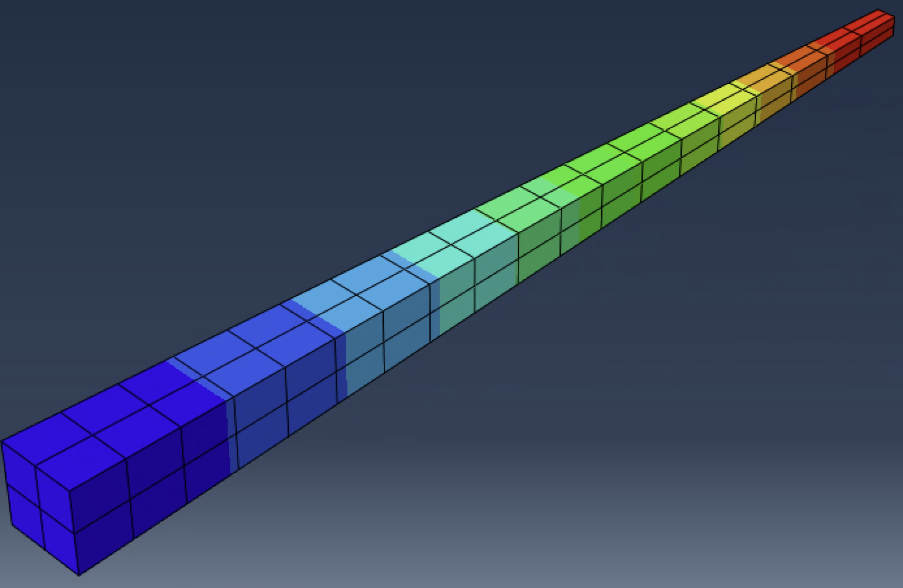

Finite Element Code Projects
Graduate class projects that involved creating custom FEM codes to predict thermal and elastic behaviors

Finite element code set up for elasticity

Temperature distribution generated by ABAQUS

Mesh and Von Mises stress contours generated by MATLAB code
Overview
Developed custom finite element method (FEM) codes in MATLAB as part of graduate engineering coursework. These projects focused on gaining an understanding of and implementing numerical methods to predict thermal and elastic behaviors of basic engineering problems - providing me with direct experience regarding FEM theory and how its used in commercial analysis tools.
Project Reports
FEM Thermal Project
Download PDFFEM Elasticity Project
Download PDFTools
Skills
Outcomes and Results
These projects were challenging, but my favorite to work on throughout my graduate degreee. I was able to develop finite element equations for the governeing equations for common PDEs (including heat transfer and stress analysis) to assembling element equations to a global system of equations for scalar/vector field problems. On top of that, I was able to compare my finite elements solutions accuracy compared to the governing equations alongside commercial softwares. I thought it was super interesting to learn about what happens behind the scenes in commercial finite element codes, and to see if I could replicate the results manually.
Reflection
I hope to leverage the knowledge I gained from this class in my career. The power of the finite element method is unparalled in my eyes in the context of mechanical engineering, and I find great satisfaction in producing accurate simulations that validate a design. Gaining a deeper understanding of the governing equations in a process and what the code is actually doing I think is invaluable to an analysis engineer's ability to ensure a finite element simualation is actually informative and not just pretty colors. Having the ability to see into the future is awesome, and I plan to lean more into this field.